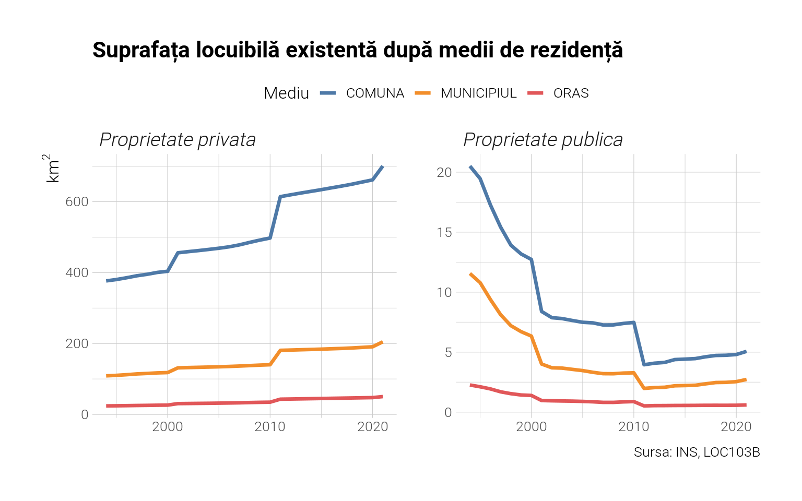
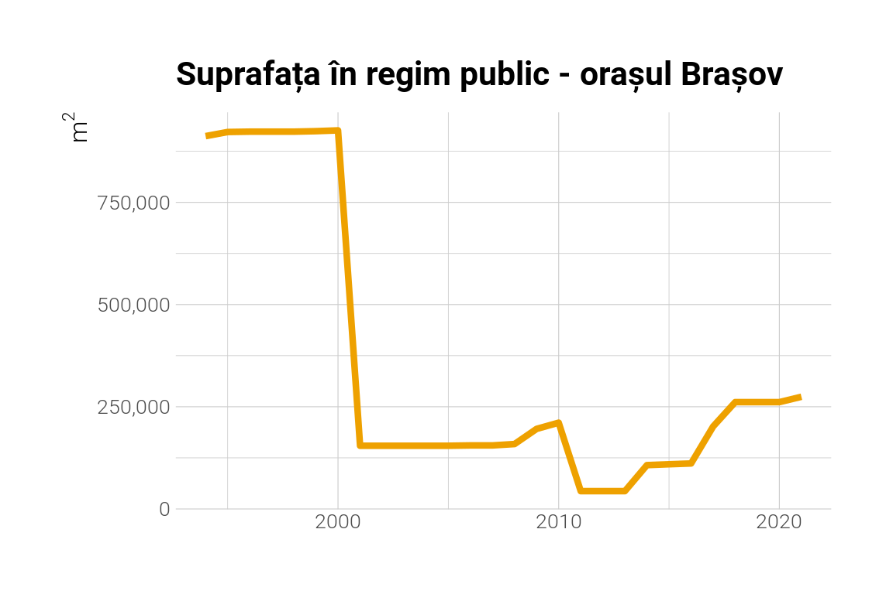

Datele de la INS prezintă informații cu privire la suprafata locuibilă existentă în țară după localitate, forme de proprietate (public sau privat) și pentru fiecare an. Putem folosi aceste date pentru a înțelege tiparul construcțiilor la noi în țară în ultimii 30 de ani. Să vedem cât s-a construit în total.
Observăm un trend descrescător pentru locuințele construite în regim public, de la 6.35 % din total în anul 1994 la 0.88 % în anul 2019, o scădere a ponderii de aproximativ 7 ori. Salturile din 2001 și 2011 sunt suspecte și trebuie puse pe seama recensămintelor din anii respectivi. Drept urmare, trendul nu este întocmai cel real.
Arată codul
x <- x %>%mutate(tip =str_extract(loc, "ORAS|MUNICIPIUL") %>%replace_na(., "COMUNA")) x %>%filter(forme!="Total") %>%group_by(tip, ani, forme) %>%summarise(total =sum(valoare)/1000000) %>%ungroup() %>%ggplot(aes(x=ani, y=total, group=tip)) +geom_line(aes(colour=tip), size=1.2) +facet_wrap(~forme, ncol=2, scales='free') +labs(title ="Suprafața locuibilă existentă după medii de rezidență",colour="Mediu", caption="Sursa: INS, LOC103B",x=NULL, y=expr(km^2)) +theme(legend.position ="top") +scale_y_continuous(labels = scales::number_format(accuracy=1)) +scale_colour_tableau()

Cel mai mult s-a construit în comune, însă acest lucru doar datorită numărului lor ridicat în comparație cu orașele și municipiile. Să vedem același grafic raportat la numărul de locuitori.
Comunele rămân mediul în care s-a construit cel mai mult raportat la numărul de locuitori. Observăm aceleași salturi suspecte. Care sunt localitățile cu cea mai mare suprafață locuibilă existentă în regim public în 2019 ? Putem explora acest lucru în tabelul de mai jos.
Arată codul
x %>%filter(grepl("public", forme)) %>%mutate(natcode =parse_number(loc) %>%as.character()) %>%inner_join(harta) %>%select(judet, name, natLevName, pop2020, valoare, ani) %>%mutate(suprafata = valoare/pop2020) %>%filter(ani==2021) %>%select(-ani, -pop2020) %>%arrange(desc(suprafata)) %>%slice(1:20) %>% gt::gt() %>% gtExtras::gt_theme_538() %>% gt::opt_table_font(font="Roboto") %>%fmt_number(columns=4:5, decimals=2) %>%tab_header(title ="Localităţile cu cea mai mare suprafaţă construită în regim public per locuitor", subtitle="Sursa: INS, LOC103B, 2021") %>% gt::tab_style(cell_fill(color="#EEA100"), cells_column_labels()) %>% gt::tab_style(cell_text(weight ='bold'), cells_title(groups='title'))
Localităţile cu cea mai mare suprafaţă construită în regim public per locuitor
Sursa: INS, LOC103B, 2021
judet
name
natLevName
valoare
suprafata
Caras-Severin
Ciudanovița
Comuna
8,597.00
13.91
Gorj
Mătăsari
Comuna
41,770.00
8.45
Caras-Severin
Rusca Montană
Comuna
9,143.00
4.92
Mehedinti
Gogoșu
Comuna
16,601.00
3.90
Mehedinti
Izvoru Bârzii
Comuna
9,410.00
3.44
Hunedoara
Ghelari
Comuna
6,304.00
3.15
Brasov
Predeal
Oras
14,662.00
3.01
Hunedoara
Aninoasa
Oras
11,408.00
2.53
Suceava
Crucea
Comuna
4,298.00
2.15
Caras-Severin
Anina
Oras
18,167.00
2.03
Tulcea
Stejaru
Comuna
2,866.00
1.89
Sibiu
Bruiu
Comuna
1,608.00
1.72
Ilfov
Corbeanca
Comuna
13,761.00
1.65
Timis
Nădrag
Comuna
3,998.00
1.41
Harghita
Borsec
Oras
3,707.00
1.39
Hunedoara
Bănița
Comuna
1,586.00
1.31
Suceava
Cârlibaba
Comuna
2,546.00
1.31
Hunedoara
Lupeni
Municipiu, altul decat resedinta de judet
33,205.00
1.29
Harghita
Bălan
Oras
9,559.00
1.28
Sibiu
Biertan
Comuna
3,888.00
1.27
Destule comune de care nu a auzit nimeni. Dar şi orăşele precum Predealul. Brașovul stă cel mai bine la capitolul suprafață locuită publică totală, nu per cap de locuitor. Însă chiar și în cazul lui declinul este semnificativ: în 1994 avea 912.000 metri pătrați locuiți în regim public față de 250.000 în 2019. Totuși, în ultimii ani a început să crească, întrucât valoarea era și mai scăzută în jurul anului 2010.
Arată codul
x %>%filter(grepl("BRASOV", loc), grepl("public", forme)) %>%ggplot(aes(x=ani, y=valoare)) +geom_line(size=1.5, colour="#EEA100") +labs(title ="Suprafața în regim public - orașul Brașov", x=NULL, y=expr(m^2)) +scale_y_continuous(labels=scales::number_format(big.mark =","))

În concluzie, locuințele publice în România au fost construite din ce în ce mai puțin în ultimii treizeci de ani. Dar înainte de a încheia, să vedem o hartă tematică cu suprafața totală per locuitor pentru anul 2019 clasificate după decile.
Ne putem gândi la această hartă ca la o hartă a sărăciei - nordul Moldovei și sudul Dobrogei sunt zonele din prima decilă, cu 6-17 metri per locuitor. Zonele albastre au peste 27 de metri per locuitor, sunt în ultima decilă.